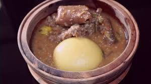
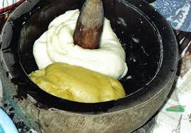

LE FOUTOU BANANE A LA SAUCE GOUAGOUASSOU :
un plat consommé par les peuples de l'EST et du centre de laCote d'ivoire;
La sauce est composée de : l'obergine, tomate,oignon,piment,viande ou poisson
le tous portés à ébulition puis ecrasé dans un Tallier .
Pour le foutou banane,on épluche dans les bananes plantains et moniocs,
On les fait cuire puis les pilent dans un Mortier-Pillon